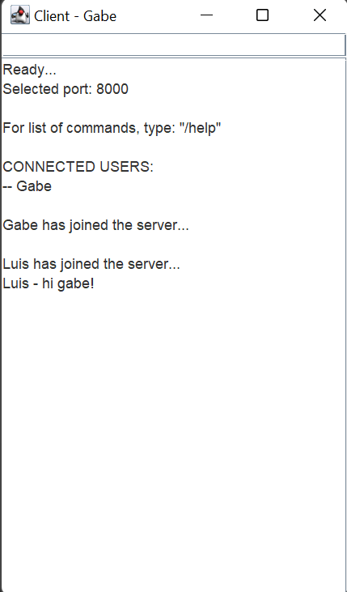
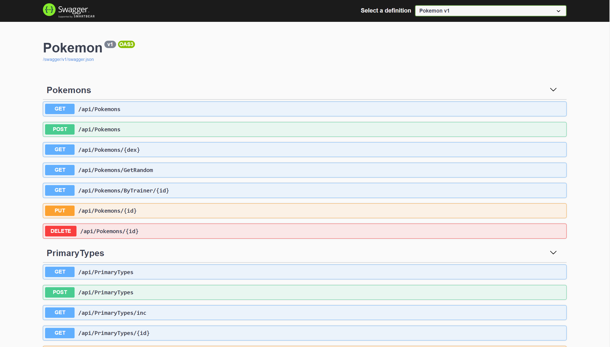
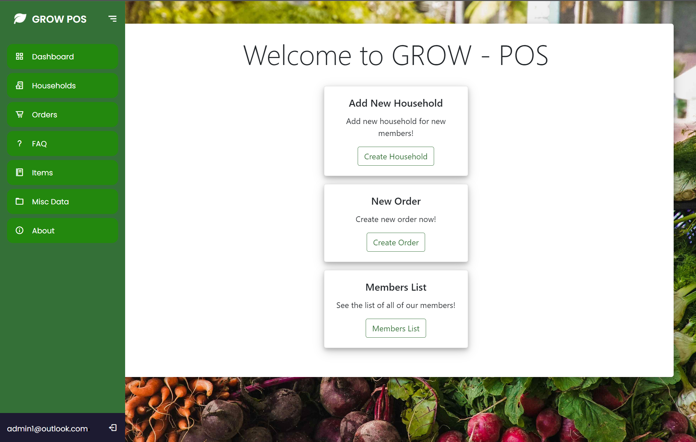

Who am I?
My name is James and I am a full-stack software developer in Welland and graduate of
Niagara College's Computer Programmer Analyst program.
I have a wide variety of experience in all areas of software development, as both an individual
and a team member,
building everything from SQLS data warehouses to complex point-of-sale systems.
Some of the projects I'm most proud of, or even just had the most fun working on, can be found
in the
Work section of this site or on my GitHub page at
Hare-J.
I am extremely passionate about building quality software following solid object-oriented design
for
ease of future use
and development.
Experience
My Resume
Niagara College Peer Tutoring
During my second and third terms I was hired by the college as a peer tutor for a number of classes
and helped over a dozen
students to understand difficult concepts in C#, Javascript, and T-SQL development.
This was immensely helpful for my own learning as well, as it forced
me to
research simpler topics that
might have been skimmed over otherwise. Additionally, it gave me extra practice programming simple
apps
through creating example
and practice work for the students I tutored to help give more context to the content they were
learning
in class.
Community Project
During my fourth term with the college I helped work on a custom point-of-sales system for a
local food charity.
For this project I was part of a team of six students with the goal of designing and developing this
system from the ground up, working with the client from the beginning to deliver the features they
wanted to streamline different day-to-day tasks for their business. We ended up creating this system
as
a web app using C# and SQLite with the Model-View-Controller design pattern and spent four months
total
working on it.
My Work
Java TCP/IP Client-Server Project
In my sixth semester one of the courses I took was on mobile development with Java, which included a
hands-on test that required me
to create a TCP/IP client-server chatroom. This was pretty different from what I'd done to that
point,
which
was almost exclusively done in
C# and was more focused on developing stand-alone apps that would at most communicate with a
database. It was also my first time doing
any work with multithreading, which was difficult at first but enjoyable to work through.
Skills used: Java, TCP/IP networking, organization
You can find the source code for this project in its GitHub repository.

This Website
I made this entire site from scratch for COMM1310 in my final semester with Niagara College with HTML
and CSS with
Bootstrap. I didn't have much experience with web development specifically before this project, having
worked mainly with
MVC views and razor code in C#, but this project seemed like a great opportunity to get some more
experience creating
responsive, modern web pages.
Skills used: UX design, HTML/CSS
You can find the source code for this project in its GitHub repository.
RESTful API with C# MVC Framework
During my fourth term I took a course in mobile development where I learned how to build custom API's
and Xamarin Forms (MAUI.NET) apps
in C# using both MVC and MVVM design patterns. For my final project in this course, I decided to build
an API and
accompanying Xamarin Forms app.
The Xamarin Forms app is still in development, but the API is functional with Swagger.
Skills used: Organization, C#, MVC (API), MVVM (XF), Swagger
You can find the source code for this project in its GitHub repository.

Community Project - C#/SQLite Point Of Sales System
At the beginning of my fourth term with Niagara College, I was put into a team of six that I had
previously worked with
in another course with the intention of taking on a long-term live development process for a local
charity competing with three other
groups for app adoption.
Throughout the four month long term, we designed the application from the ground up, meeting with the
client regularly to
make sure we were including everything they wanted and were able to plan for future feature
implementations. This made for a great lesson in the importance of
teamwork and
communication on large projects, especially given the tight deadlines we had to work with. We built the
application using the C# MVC framework for all the inner workings and front
end, and SQLite
for their database.
Skills used: Teamwork, communication, C# MVC, UX design
